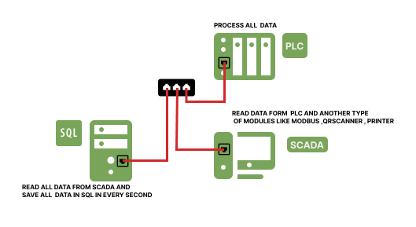

Node-RED for Industrial Automation
In the context of industrial automation, Node-RED offers several benefits and use cases:
- Device Integration: Node-RED supports a wide range of protocols and communication interfaces, making it ideal for integrating various industrial devices and sensors. It can communicate with PLCs (Programmable Logic Controllers), SCADA systems, HMI (Human-Machine Interface) devices, sensors, and actuators.
- Data Acquisition and Processing: Node-RED allows you to collect real-time data from industrial devices and sensors, process it, and perform actions based on predefined rules and logic. You can easily build flows to read data from multiple sources, perform calculations or transformations, and store it in databases or transmit it to other systems.
- Visualization and Dashboards: Node-RED provides built-in nodes and integrations for creating interactive dashboards and visualizations. You can create real-time displays, charts, and graphs to monitor industrial processes, track sensor data, and display key performance indicators (KPIs).
- Rule-based Automation: With Node-RED's visual flow editor, you can easily define rules and logic to automate industrial processes. It allows you to set up triggers, conditions, and actions based on data inputs and events. For example, you can create workflows to control the operation of machines, monitor temperature levels, or trigger alarms based on predefined thresholds.
- Integration with External Systems: Node-RED can connect with external systems and services, such as databases, APIs, cloud platforms, and messaging systems. This enables seamless integration with enterprise systems, data analytics platforms, or remote monitoring and control applications.
- Flexibility and Scalability: Node-RED's modular and extensible architecture makes it highly flexible and scalable. You can easily add custom nodes or install existing nodes from a vast library to extend its functionality. Additionally, it supports distributed deployments, allowing you to scale up your automation solution as per the requirements.
- Rapid Prototyping and Development: Node-RED's visual programming paradigm enables rapid prototyping and development of automation applications. The drag-and-drop interface and the ability to quickly wire together different components make it accessible to both developers and non-programmers.
Overall, Node-RED is widely adopted in the industrial automation sector due to its ease of use, versatility, and extensive community support. It simplifies the integration of various industrial devices, data processing, and automation, enabling faster development of robust and scalable automation solutions.

Node-RED
Node-RED: Visual programming tool for IoT and automation, connecting devices, APIs, and services. Simplifies data flow, automation, and integration with an intuitive, browser-based interface.

Industrial Automation
Node-RED empowers industrial automation with visual programming, device integration, data processing, rule-based automation, and seamless integration with external systems for efficient and scalable solutions.